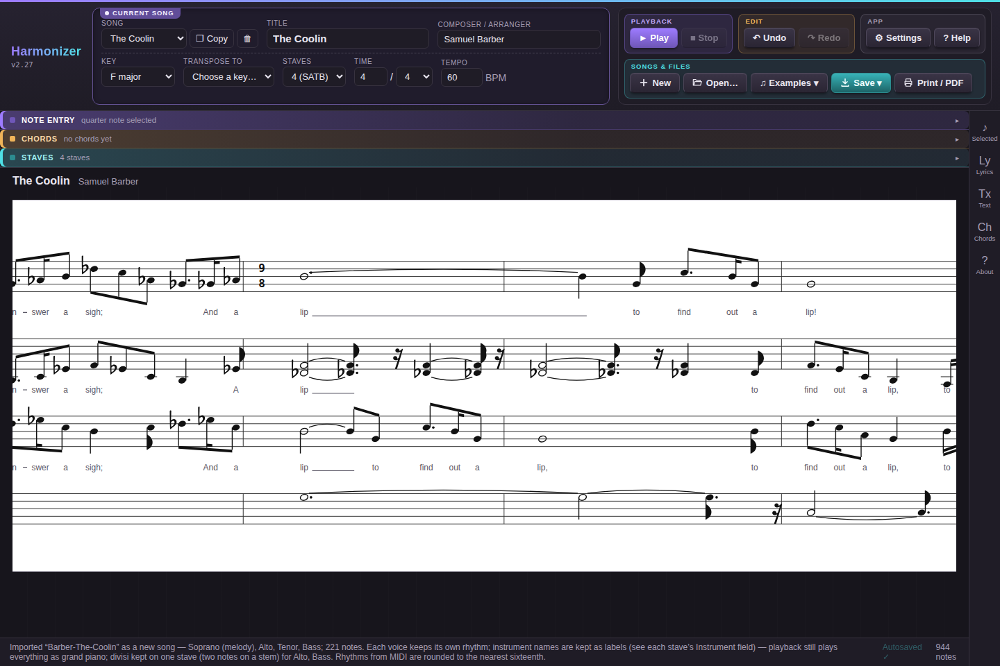

Harmonizer
A workbench for roughing out vocal arrangements. Sketch a melody, place chords above it, and let Harmonizer generate SATB parts underneath. Then play it back on a real piano sound and edit any note until it sounds right.

What it does
- Note entry: click or drag on the staff, or type a compact text notation. Lyrics support up to six verses.
- Generate parts: fills in the other voices with real part-writing rules, in Close harmony, Traditional/hymn or Open/wide style. (How it reasons)
- Choral notation: fermatas, breaths, tempo changes, dynamics, rehearsal letters, repeats and endings. All of them affect playback.
- Import: MusicXML (including .mxl from MuseScore, Finale or Sibelius) and MIDI.
- Export: .json, .musicxml, .mid, .wav, print/PDF, and rehearsal tracks with one WAV per voice.
- Practice: loop, practice speed, and jumping to a rehearsal letter in the play window.
Everything runs in your browser. There's nothing to install, and your songs are saved in this browser as you work.
MIT License © dffmonolith · Piano: Salamander Grand Piano by Alexander Holm, CC BY 3.0 · Bravura glyphs, SIL OFL 1.1